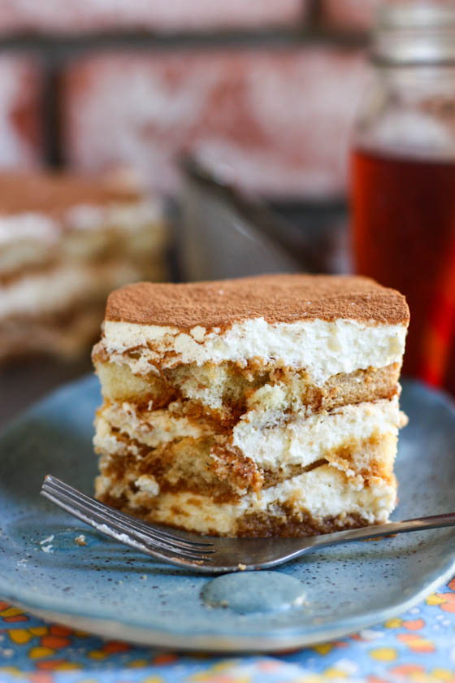
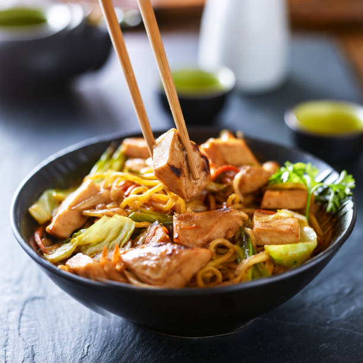
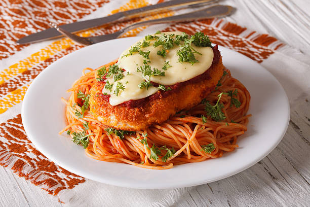

Andrew's Recipe Website
This is my first website and I will make a list of a few of my favorite dishes. They will be accompanied by an ingredient list and how to make them!

Tiramisu is a classic Italian layered dessert with rum-flavored, coffee-soaked ladyfingers, a creamy mascarpone custard, and whipped cream. This tiramisu recipe is easy to make at home for an impressive no-bake dessert.
Classic tiramisu, with its irresistible coffee flavor and lightly sweetened mascarpone, will never go out of style. This tiramisu recipe is a no-bake dessert that's sure to impress even the pickiest of eaters.
Tiramisu Ingredients:
Here's what you'll need to make this top-rated tiramisu recipe:
- Egg Yolks
- Sugar
- Milk
- Cream
- Vanilla
- Moscarpone
- Coffee
- Rum
- Ladyfingers
- Cocoa Powder
How to Make Tiramisu:
Ready to make the best tiramisu of your life? You'll find the full recipe below, but here's what you can expect when you make this classic tiramisu recipe:
- Make the Filling: Cook the egg yolks, sugar, and milk until slightly thickened. Let cool slightly, then chill in the fridge for about an hour. When the filling has fully chilled, mix in mascarpone cheese.
- Make the Whipped Cream: Beat heavy cream with vanilla extract until stiff peaks form.
- Soak the Ladyfingers: Combine coffee and rum in a small bowl. Pour mixture over ladyfingers that have been split in half lengthwise.
- Assemble the Tiramisu: Line the bottom of a baking dish with soaked ladyfingers. Spread half of the mascarpone mixture over the ladyfingers, then half of the whipped cream over that. Repeat in the same order. Dust with cocoa powder.
Chicken Yakisoba

This traditional Japanese yakisoba noodle dish includes cabbage and chicken in a spicy sauce.
Ingredients:
- 2 tablespoons canola oil
- 1 tablespoon sesame oil
- 2 skinless, boneless chicken breast halves - cut into bite-size pieces
- 2 cloves garlic, minced
- 2 tablespoons Asian-style chile paste
- ½ cup soy sauce
- 1 tablespoon canola oil
- ½ medium head cabbage, thinly sliced
- 1 onion, sliced
- 2 carrots, cut into matchsticks
- 1 tablespoon salt
- 2 pounds cooked yakisoba noodles
- 2 tablespoons pickled ginger, or to taste (Optional)
Cooking Directions:
- Heat 2 tablespoons canola oil and sesame oil in a large skillet over medium-high heat. Cook and stir chicken and garlic in hot oil until fragrant, about 1 minute. Stir chile paste into chicken mixture; cook and stir until chicken is completely browned, 3 to 4 minutes. Add soy sauce and simmer for 2 minutes. Pour chicken and sauce into a bowl.
- Heat 1 tablespoon canola oil in the skillet over medium-high heat; cook and stir cabbage, onion, carrots, and salt in hot oil until cabbage is wilted, 3 to 4 minutes.
- Stir the chicken mixture into the cabbage mixture. Add noodles; cook and stir until noodles are hot and chicken is no longer pink inside, 3 to 4 minutes. Garnish with pickled ginger.
Chicken Parmesan

This is one of my personal favorites and a dish that I could not leave off this list.
Ingredients:
- 4 skinless, boneless chicken breast halves
- salt and freshly ground black pepper to taste
- 2 large eggs
- 1 cup panko bread crumbs, or more as needed
- ¾ cup grated Parmesan cheese, divided
- 2 tablespoons all-purpose flour, or more if needed
- ½ cup olive oil for frying, or as needed
- ½ cup prepared tomato sauce
- ¼ cup fresh mozzarella, cut into small cubes
- ¼ cup chopped fresh basil
- ½ cup grated provolone cheese
- 2 teaspoons olive oil
How to Make Chicken Parmesan That's Never Soggy:
Chicken Parmesan is no doubt the most popular non-pasta dish in Italian-American style restaurants. And while this delicious meal may seem fancy, it's actually pretty easy to make at home.
- Preheat an oven to 450 degrees F (230 degrees C).
- Place chicken breasts between two sheets of heavy plastic (resealable freezer bags work well) on a solid, level surface. Firmly pound chicken with the smooth side of a meat mallet to a thickness of 1/2-inch.
- Season chicken thoroughly with salt and pepper. Using a sifter or strainer; sprinkle flour over chicken breasts, evenly coating both sides
- Beat eggs in a shallow bowl and set aside.
- Mix bread crumbs and 1/2 cup Parmesan cheese in a separate bowl, set aside.
- Dip a flour-coated chicken breast in beaten eggs. Transfer breast to the bread crumb mixture, pressing crumbs into both sides. Repeat for each breast. Let chicken rest for 10 to 15 minutes.
- Heat 1/2 inch olive oil in a large skillet on medium-high heat until it begins to shimmer. Cook chicken in the hot oil until golden, about 2 minutes per side. The chicken will finish cooking in the oven.
- Transfer chicken to a baking dish. Top each breast with 2 tablespoons tomato sauce. Layer each chicken breast with equal amounts of mozzarella cheese, fresh basil, and provolone cheese. Sprinkle remaining Parmesan over top and drizzle each with 1/2 teaspoon olive oil.
- Bake in the preheated oven until cheese is browned and bubbly and chicken breasts are no longer pink in the center, 15 to 20 minutes. An instant-read thermometer inserted into the center should read at least 165 degrees F (74 degrees C).
Return to top